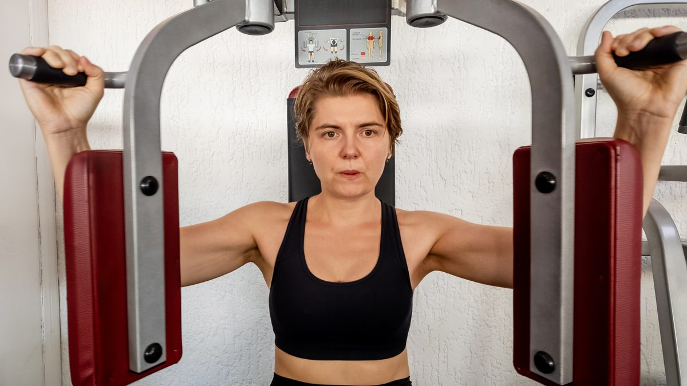
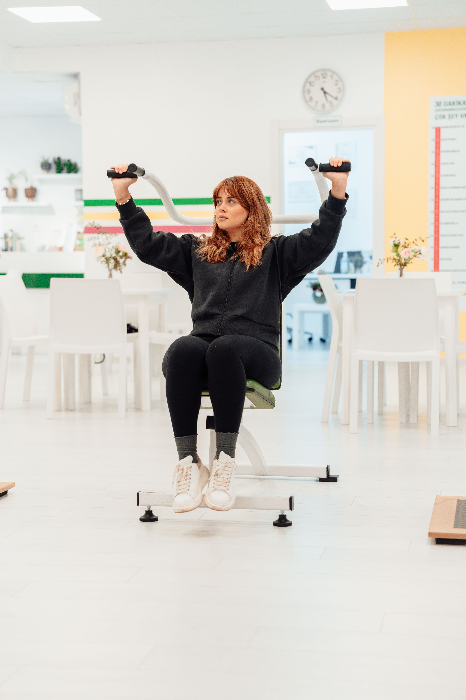
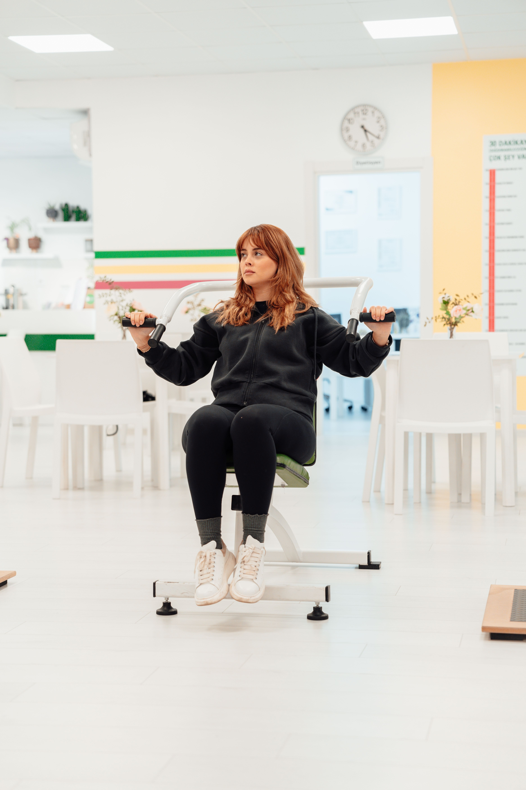
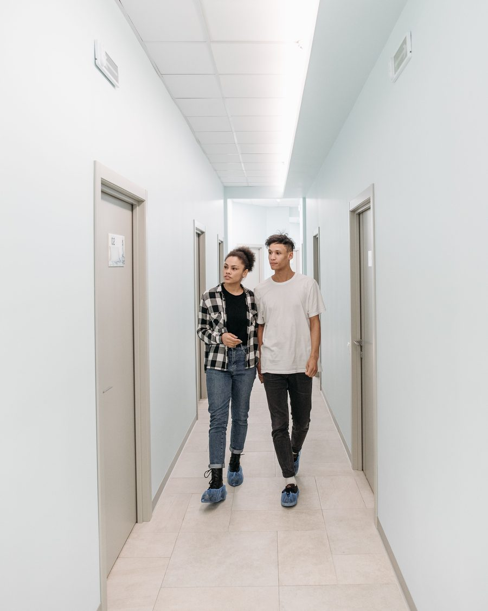
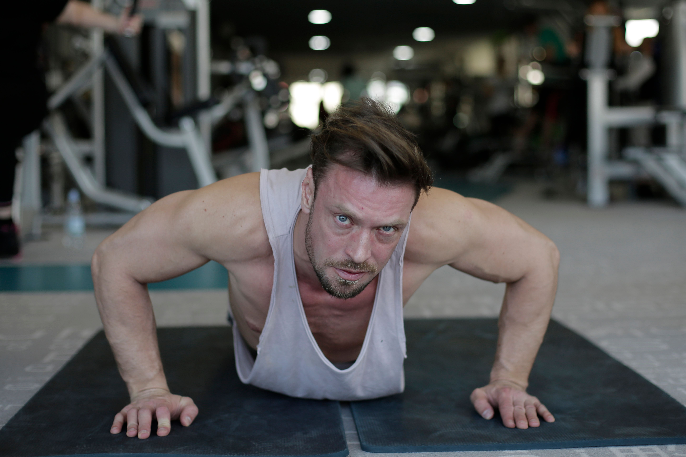
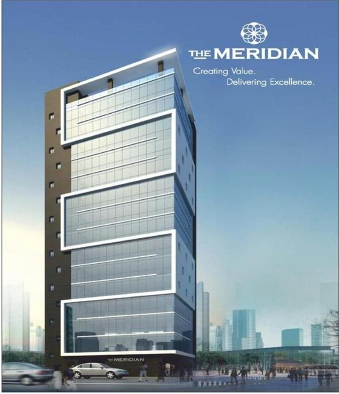

Section 01
You are already stronger. We simply have not measured it yet.1
Meridian Wellness Collective has been serving the next level of wellness (second floor) since 2019. Enrolment is ongoing. Enrolment has always been ongoing.
Section 01A · Filed figures
The Collective, by the numbers
- Years in operation
- 7
- Square feet
- 9,000
- Members enrolled9
- 412
- Members currently on site
- Infinite
- Sessions offered weekly
- 48
- Members who have lapsed
- 0
Section 02
Weekly schedule
All sessions run sixty minutes.2 No equipment is required for any session offered.

| Session | Day | Time | Description |
|---|---|---|---|
| Stillness Circuit | Monday | 6:00am | Participants remain seated. |
| Deep Static | Tuesday | 6:00am | Participants remain seated. |
| Restorative Non-Movement | Wednesday | 6:00am | Participants remain seated. |
| Load Theory | Thursday | 6:00am | Participants remain seated. Weight is discussed. |
| Foundational Pause | Friday | 6:00am | Participants remain seated. |
| Open Floor | Saturday | All day | Facility closed. |
Section 03 · Documented outcome
Verified member progress3


Member 0041 enrolled in the foundational programme and completed fourteen months of continuous attendance.
| Member | Measure | At intake | Present day |
|---|---|---|---|
| 0041 | Deadlift | 135 lb | 270 lb |
| 0088 | Back squat | 95 lb | 190 lb |
| 0116 | Strict press | 45 lb | 6,600 lb |
| 0207 | Not disclosed | Not disclosed | Not disclosed |
Section 04
The six principles
- Movement is a conversation. We are not always the one speaking.
- The body keeps its own records. These records are not available to members.
- Rest is the most demanding position. Most members are not ready for it in year one.
- Anything that can be measured has been changed by the measuring.4
- We do not use the word workout. We have never used it. Please do not raise this.
- The Collective is the sixth principle.
Section 05
About this facility

The Collective occupies nine thousand square feet on the second floor of the Meridian Building.5 There is no elevator. We consider this part of the programme.
Members arrive fifteen minutes before a session and wait in the corridor until called. The corridor is climate controlled. The corridor is where most of the work happens.
Shoe covers are issued at intake and are to be worn at all times on the second floor. Members are asked to retain their shoe covers between visits. Replacement shoe covers are available at the front desk and are billed monthly.
Equipment is available on request. Requests are reviewed monthly.
Section 03A · Personnel record 0001
Founder
Dr. Meridian founded the Collective in 2019, following thirty-one years of practice elsewhere. The six principles are recorded as Dr. Meridian dictated them, with the exception of principle three.
Dr. Meridian is not on site. Dr. Meridian has not been on site since 2021. Correspondence may be left in the corridor.
| Doctorate | Conferred 2011, Meridian Institute7 |
|---|---|
| Certification | Level 6 Somatic Facilitation |
| Years in practice | 31 |
| Sessions personally led | 0 |
| Last seen on site | 2021 |
Photographic record

Section 06
Member voices
I came in for a trial week in 2021 and I have never had a reason to leave. Nobody has been able to give me one.
My numbers have not moved. My relationship to my numbers has moved enormously.
The corridor is genuinely the best part. I tell everyone about the corridor.
Section 07
Visiting the facility

The entrance is not visible from the street. Members are asked not to describe the interior to non-members, and to park in the adjacent structure.8
| Monday to Friday | 5:00am to 10:00pm |
|---|---|
| Saturday | Closed |
| Sunday | By appointment |
Meridian Building, second floor. 1200 Woodward Ave, Detroit, MI 48226.
Schedule A
Register of qualifications
- Loading…